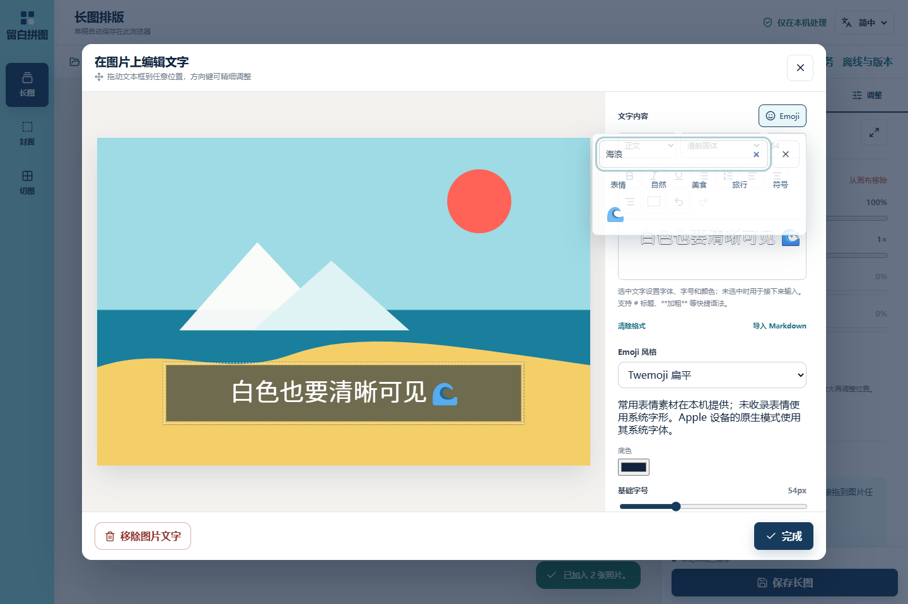

桌面白字与浮层


先修复白字编辑可读性，再推进浮层和风格素材、可靠存储、可见区处理、多图行、切图与完整离线包。保留现有海军蓝/青色工作台。输入区辅助不进入导出；资源、草稿、保存快照继续具有独立生命周期。F01 操作式撤销继续保留，不把全局历史建议标作已实现。固定 Apple 图形包不纳入本轮。
| 项目 | 状态 | 实现与实际证据 |
|---|---|---|
| 白字可读性 | verified | RichTextEditor 依据计算颜色为浅色文字加编辑辅助描边，图片容器与导出未增加描边。桌面/手机图片文字输入、持续焦点、重开及 PNG 有回归。 |
| R07 | verified | EmojiPopover 在当前弹窗所属 Portal 中定位；桌面锚定、手机 visualViewport 避让，不撑长右栏；保留文档选区，外点/关闭恢复焦点，Escape 先关表情。图片编辑器包含浮层的模态 Tab 范围。桌面/390px 捕获与焦点测试。 |
| R08 | verified | 原生、Twemoji v17.0.3（84 项）、Fluent 固定提交（80 项）；保留 Unicode、文档风格 ID、明确缺图回退。共享 emoji runs 为 SVG 和 Canvas 提供宽度/基线；图像导出前等待解码。本地离线 Fluent 编辑与 PNG 实际通过。来源与许可见 素材清单。 |
| F02 | verified | 逐项导入进度、取消剩余、失败文件/原因与单独重试；有效资源保留，串行解码限制内存。取消/重试和混合损坏文件浏览器回归通过。取消在当前解码完成后生效，不宣称可中断 HEIF 编解码器内部执行。 |
| F03/F04 | verified | 保留上一轮来源 ID、创建/修改时间、文字 displayName 和正文分离、统一资源详情入口。来源刷新后继续更新及任务/资源回归继续运行。 |
| F05 | verified | storageGraph/IndexedDB v4：逐条 JSON 元数据、SHA-256 不可变 Blob；原图哈希最多同时读取2项，未改记录不重复写，旧数据兼容读取、首次改写原子提交。清理在同一个排他事务内扫描引用与回收，不误删草稿/快照/切图。完整可编辑项目 ZIP 校验版本、尺寸预算、引用和哈希，恢复到新任务。Web Locks 只允许一个页面挂载编辑与自动保存；旧格式/未来格式拒绝覆盖。项目包、重复字节去重、GC、篡改包拒绝、未知版本和多标签回归通过。 |
| F06 | verified, real photos pending | 新图片 256px 缩略图；资源缩略图按可见区域加载，卡片 content-visibility；画布离屏原图移出 DOM 并释放 URL。图层列表保留稳定布局供触屏排序。50/200 项合成 SVG 测量见下；真实相册/手机内存与整图导出仍须设备数据，不宣称已完成真实照片基准。 |
| F07 | verified locally; CI required for publish | UI 套件32项（31项可运行，桌面触屏专项不适用）及独立生产离线套件进入 Check 与 Publish。新增白字、浮层、图形导出、恢复、占用保护、有限多图行、切图ZIP、取消重试、断网重开。两套产物目录独立。单元88项通过；部署Windows12项通过，Linux符号链接由CI验证。 |
| F08 | verified | 图层多选2–4张独立图片组合，完整图层边界、宽度比例、拆分、复制、基础样式复制/粘贴；样式不覆盖内容与取景，并同步对应资源模板。旅行标题、照片说明、日期分隔模板由用户明确插入。三图比例和模板贯穿保存与切图的回归通过。 |
| F09 | verified | 图片/长图/封面资源作为切图源，按任务保存来源快照、取景、数量、格式和尺寸上限；完整项目保存屏障包含切图。单张、逐个下载及ZIP并存。切换工具保留取景与格式，PNG/JPG 本地生成。 |
| F10 | verified | 生成 service worker、应用清单与固定版本缓存；应用代码先缓存，字体/表情按使用或完整离线包缓存。仅在清单全部缓存完成后显示就绪。提供在线/离线、版本、失败重试及新版本提示；保存后由用户激活，不强制刷新。生产静态站断网重开、图形表情编辑、PNG导出在桌面/手机仿真均通过。 |
合成示例，不含用户相册。白字辅助在输入框中可见，图片仍为真实白字。
8c497e7 基线测量：Windows Edge 无头、1440×960，生成1920×1280 SVG：50项导入约3.32秒、刷新0.66秒；200项导入7.58秒、刷新0.75秒。200项缩略图合计约522KB，测量时原图DOM只有2项。不是实拍相册性能承诺。原始测量 · 界面诊断。
npm test；npm run build；npm run test:ui；npm run test:offline；Python部署测试。scripts/capture_advanced.mjs 和 scripts/measure_library.mjs 通过4185隔离预览复现，不读真实用户数据。界面检查无页面异常；390px英文无横向溢出。Vite升级8.3.3，npm官方audit当前为0项漏洞。
现代浏览器/HTTPS（或localhost）提供Web Locks、Web Crypto、IndexedDB。真实iPhone中文输入法/软键盘、真实HEIC大图库和微信最终展示仍待实机核验。项目包展开上限256MiB，ZIP批量图像200MiB；不会无上限并发解码。原生Emoji与未收录字形随设备不同；图形素材按固定版本保存，不分发Apple私有字体。
v4结构升级只新增store，旧记录首次保存的改写为原子事务；失败保留旧数据。静态回滚不等于数据回滚，旧网页不能直接写新数据库。离线包不是云端备份，清除站点数据会删除项目与缓存。旧版本缓存仅在用户激活新版本时清理。
发布：工作分支全量GitHub检查通过后合并main，部署包再次验证；以公网version.json与页面实际加载核对，不把Release发布等同于服务器切换。结果见最终交付记录。